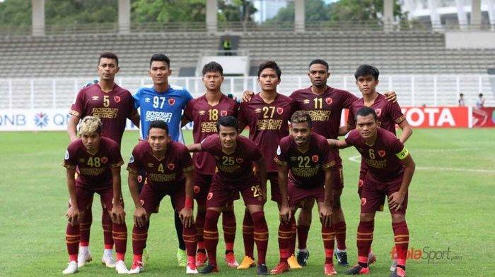

PSM Makassar 2020
PSM Makassar selalu bertengger di posisi tiga besar dalam dua edisi perdana kasta tertinggi Indonesia pada era Liga 1. Namun, PSM harus terlempar ke papan tengah pada musim lalu, atau Liga 1 2019, meski dalam perjalanannya berhasil meraih trofi juara Piala Indonesia.
Manajemen PSM Makassar pun kini melakukan perombakan signifikan, termasuk di jajaran staf kepelatihan, dan tentunya pemain, demi menghadapi persaingan yang bakal lebih sengit pada musim 2020.
PSM mendatangkan Bojak Hodak untuk menggantikan peran Darije Kalezic sebagai pelatih kepala. Kedatangan mantan pelatih timnas Malaysia U-19 ini diikuti sederet pemain baru, termasuk tiga pemain asing yang murni menjadi pilihan Hodak.
Ketiganya adalah Giancarlo Rodrigues dari Brasil, Hussein El Dor dari Lebanon, dan Serif Hasic dari Bosnia. Ketiganya melengkapi susunan pemain asing yang sudah ada, di mana PSM menyisakan Wiljan Pluim yang dipertahankan setelah melepas Amido Balde, Aaron Evans, dan Marc Klok.
Sementara itu, tidak ada lagi kiper Rivky Mokodompit yang selama tiga musim menjadi dewa pelindung gawang PSM. Beny Wahyudi dan Taufik Hidayat pun hanya satu musim bersama Juku Eja meski kerap menjadi starter. Zulham Zamrun pun pergi meninggalkan tim meski pada musim lalu berkontribusi membawa PSM meraih gelar juara Piala Indonesia dengan menjadi top scorer.
Tentu tidak mudah bagi PSM dan Bojan Hodak untuk membentuk skuat yang tangguh dengan mayoritas pemain baru. Hal ini bisa terlihat dalam kiprah mereka di Piala AFC 2020. Setelah menyingkirkan klub Timor Leste, Lalenok United, di babak play-off, PSM merasakan keras persaingan dengan takluk 1-2 dari Tampines Rovers pada laga pertama Grup H Piala AFC 2020.
Penampilan Juku Eja belum membaik pada dua laga uji coba terakhir. Mereka kalah 0-1 dari Tira Persikabo dan imbang 2-2 dengan klub Liga 2, Persiba Balikpapan di Stadion Mini Cibinong, Bogor pada 16 dan 18 Februari 2020.
Hodak pun mengakui penampilan timnya belum maksimal, terutama soal penyelesaian akhir. Namun, pelatih berpaspor Kroasia ini tetap yakin PSM mampu bersaing musim ini.
"Sejauh ini saya menilai semangat dan motivasi pemain tetap terjaga. Mereka hanya butuh waktu untuk meningkatkan kerja sama dan kesepahaman dalam bermain," tegas Hodak.
Sikap optimistis serupa diusung CEO PSM, Munafri Arifuddin. Menurutnya, manajemen sudah melakukan langkah yang benar dalam membangun tim. "Mayoritas pemain yang datang berdasarkan rekomendasi tim pelatih. Manejemen hanya sebagai fasilitator saja," terang Munafri.
Itulah mengapa Munafri yakin prestasi PSM Makassar bakal lebih baik ketimbang musim lalu. Pada gelaran Piala AFC 2020, PSM membidik target lolos ke final zona Asean. Sedang di Liga 1, target awal mereka adalah menembus lima besar klasemen. "Saya pikir ini target realistis buat PSM dengan materi yang ada saat ini, " kata Munafri.
Profil Pelatih: Bojan Hodak
Bojan Hodak datang ke PSM Makassar dengan sederet gelar selama berkiprah di Malaysia. Bersama Kelantan FA, pelatih berpaspor Kroasia ini meraih treble winner pada musim 2012. Hodak pun membantu Johor Darul Takzim meraih trofi juara Liga Super Malaysia 2014. Terakhir, ia membawa tim nasional Malaysia U-19 juara di Piala AFF U-19 dua tahun lalu.
Sederet prestasi inilah yang membuat manajemen PSM menjadikan Hodak sebagai prioritas setelah gagal mendapatkan tanda tangan Mario Gomez yang lebih memilih Arema FC. Ibarat gayung bersambut. PSM dan Hodak langsung sepakat bekerja sama pada pertemuan dalam hitungan jam di Surabaya akhir Desember 2019 lalu.
Kehadiran Hodak membawa warna baru di PSM. Layaknya pelatih asal Eropa Timur, Hodak menerapkan latihan keras dan disiplin tinggi pada timnya. Tak hanya itu, berbeda dengan Robert Alberts dan Darije Kalezic, Hodak pun lebih sering mengggelar latihan tertutup.
Bisa jadi, Hodak ingin fokus memberikan pemahaman kepada pemainnya terkait pola 4-4-2 yang digemarinya karena selama tiga musim terakhir, PSM lekat dengan pola 4-3-3.
Sejauh ini, hasilnya memang belum optimal betul. Pada fase grup Piala AFC 2020, PSM langsung takluk 1-2 ditangan Tampines Rovers pada laga perdana (12/2/2020).
Padahal Hodak diharapkan membawa PSM meraih prestasi lebih baik dari pelatih musim lalu, Darije Kalezic. Apalagi, berbeda dengan Darije yang datang ke PSM saat tim sudah terbentuk, Hodak justru menjadi aktor utama perekrutan pemain, di antaranya membawa tiga pemain asing baru, Giancarlo Rodrigues (Brasil), Hussein El Dor (Lebanon) dan Serif Hasic (Bosnia).
Komposisi Pemain

- Kiper: Syaiful Syamsuddin, Muhammad Reza Pratama, Miswar Saputra, Hilman Syah
- Belakang: Zulkifli Syukur, Wasyiat Hasbulla, Hussein El Dor, Asnawi Bahar, Dedy Gusmawan, Serif Hasic, Abdul Rahman, Leo Guntara, Roni Esar Beroperay, Fajri Ardiansyah, Firza Andika
- Tengah: Irsyad Maulana, Rizky Pellu, Rasyid Bakri, Takwir, Wiljan Pluim, M. Arfan, Bayu Gatra, Ahmad Agung
- Depan: Aji Kurniawan, Yakob Sayuri, Giancarlo Rodrigues, Osas Saha, Ferdinand Sinaga, Ezra Walian
Profil Pemain Bintang: Wiljan Pluim

Selama tiga musim terakhir, baik atau tidaknya penampilan PSM Makassar boleh dibilang sangat tergantung dengan kondisi Wiljan Pluim. Kalau gelandang berpaspor Belanda ini sedang fit dan mood yang baik, sulit buat lawan meredam keganasan Juku Eja.
Pluim telah membuktikan kapasitasnya dengan membawa PSM bertengger di papan atas pada Liga 1 20017 dan 2018 serta juara Piala Indonesia.
Musim lalu, penampilan PSM menurun tajam setelah juara Piala Indonesia, tak lepas dari cedera engkel yang mendera Pluim. Cedera yang memaksanya mengakhiri kiprahnya lebih cepat bersama PSM.
Padahal, Juku Eja sempat menembus lima besar klasemen sementara. Seperti diketahui tanpa Pluim, PSM akhirnya bertengger di papan tengah pada akhir kompetisi.
Musim 2020 ini, Pluim kembali jadi tumpuan PSM. Tentu tak mudah buat Pluim sebagai kapten yang dituntut untuk selalu tampil prima demi menjaga pamor Juku Eja di Liga 1 dan Piala AFC.
Selain tak lagi bersama kompatriotnya, Marc Klok, yang hengkang ke Persija, Pluim harus lebih jeli dan lincah menghindari 'terjangan' pemain lawan yang menjadikannya target incaran untuk dimatikan.
Seperti musim sebelumnya, PSM Makassar selalu menjadi tim yang diperhitungkan untuk bersaing di papan atas Liga 1. Kehadiran Bojan Hodak, pelatih degnan sederet gelar di Malaysia bisa jadi tumpuan Juku Eja meraih prestasi optimal musim ini.
Tentu tidak mudah buat Hodak mewujudkannya. Selain wajib meramu taktik jitu dengan formasi baru, Hodak akan dihadapkan dengan jadwal padat timnya.
Pada musim lalu, PSM terseok di Liga 1 karena bersaing ketat dalam dua ajang lainnya, Piala Indonesia dan Piala AFC. Kalau tak jeli dan konsisten, bisa jadi PSM akan diadang masalah yang sama pada musim ini.
Source: Bola.net